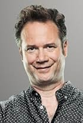

François Pérusse
François Pérusse, né le 8 octobre 1960 à Québec, est un humoriste, chanteur et acteur québé
Il est notamment célèbre pour ses sketchs humoristiques et radiophoniques où il manie le non-sens et les jeux de mots. Ses sketches les plus connus sont ceux de la série Les 2 Minutes du peuple, dont le sens comique repose principalement sur des voix passées à des vitesses plus ou moins accélérées, des enchaînements de calembours, de courtes parodies et des chansons.
Biographie
Jeunesse
François Pérusse naît à Québec d'Adélard et de Charlotte Pérusse. Il fait l'école buissonnière très jeune et démontre un grand intérêt pour la musique et l'humour.À l'âge de 17 ans, il se voit offrir une guitare basse par son frère, Marc Pérusse, et rejoint un groupe de jazz. Ses talents de bassiste le conduisent à jouer pour des artistes québécois de renom, dont Jean Leloup et Luc De Larochellière (sur l'album Sauvez mon âme). En parallèle de son travail dans un magasin de musique, il s'initie à la radio sur les ondes de CKRL (radio communautaire de Québec) où il travaille pendant près de douze ans.
Carrière
En 1990, François Pérusse réalise une publicité pour l'album Sauvez mon âme de Luc De Larochellière. Cette capsule publicitaire humoristique suggère que le disque de Larochellière permet d'entendre, si on le fait jouer à l'envers, des messages subliminaux diaboliques : cela attire l'attention de la station CKOI-FM qui l'embauche pour créer le programme Les 2 minutes du peuple.En 1991, il fait un saut au petit écran dans le rôle d’homme-orchestre et de spiceman pour le quiz musical Rockambolesque à MusiquePlus. Il lance son premier album, L'Album du Peuple Tome 1, qui se vendra à plus de 80 000 exemplaires. Fort de cette expérience, il réalise par la suite dix autres Albums du peuple au Québec (plus L'Album Pirate, essentiellement un Album du peuple sans nom et numéro, sorti entre les Tomes 5 et 6).
Il se diversifie par la suite : il sort deux albums pour la France (remplaçant son accent québécois d'origine par l'accent parisien pour les disques vendus en France) simultanément en Europe et au Québec. Il participe également à des émissions à la télévision québécoise. Il se joint aux Bleu Poudre comme directeur musical et bruiteur pour l'émission Taquinons la planète (télévision de Radio-Canada). Il joue et chante dans quelques clips, dont Hutchison Fairmount et Gouri Glogenflobish. Il porte son concept de sketchs radiophoniques à la télévision, avec d'une part Le JourNul de François Pérusse (1999-2001) puis, à partir de 2006 sous le titre On s'écoute parler sur réseau TVA/LCN (La chaîne info de TVA) et La série du peuple (2000) sur TVA.
Il est diffusé en France pour la première fois au début des années 1990 sur la radio France Inter dans l'émission Audimatraquage. En 1996, il participe à l'émission Le Morning d'Arthur sur Europe 2.
Au cours de sa carrière, il s'est illustré à de nombreuses reprises. Outre ses performances vocales et humoristiques, il a été récompensé par plusieurs prix Félix et plusieurs prix Gémeaux, sans compter plusieurs prix au Gala des Olivier.
Les 2 minutes du peuple sont aussi diffusées quotidiennement de manière inédite, sous forme de « capsules » en français québécois sur la radio québécoise Énergie, et en français de France sur les radios françaises Europe 2 puis Rire et Chansons, ainsi que Couleur 3 en Suisse romande. Depuis les années 1990, il est aussi diffusé sur les ondes de CIPC 99,1 sur la Côte-Nord. Depuis son retour à la radio au début des années 2000, les stations CHLC-FM à Baie-Comeau et CHOE-FM à Matane diffusent Les 2 minutes du peuple.
En complément de ses capsules radiophoniques, il participe à plusieurs campagnes publicitaires humoristiques. En 1994, il crée des publicités radio pour Petro-Canada. Très populaires, celles-ci remportent le Mondial Or et le Grand prix de L'ACCT au Mondial de la publicité à Marrakech. À partir de 2004, il participe aux publicités pour la marque Oasis.
En 2006, il crée les montages audio du tout dernier spectacle du Cirque du Soleil en hommage aux Beatles, Love, spectacle permanent basé à Las Vegas. Pour ce faire, il écoute les discussions enregistrés en studio entre les quatre musiciens et les monte pour en faire des textes cohérents et humoristiques. Ces extraits sont joués lors du spectacle tandis que les silhouettes des Beatles, joués par des acteurs, sont projetés en ombres chinoises.
En 2011, il écrit et réalise Pérusse Cité, une comédie animée dont la diffusion débute le 19 mars 2012 sur Radio Canada1. La série se termine le 9 octobre 2013 après deux saisons et 23 épisodes.
De 2014 à 2017, dans le cadre de l'émission L'Antichambre présentée sur RDS2, il produit des capsules humoristiques intitulées La Tite chambre dans laquelle il rajoute sa voix sur des images de personnalités sportives ou des animateurs du réseau.
En 2016, il met fin aux 2 minutes du peuple et retourne à CKOI-FM pour y lancer Pérusse Express, qui traitera de sujets d'actualité3 jusqu'en 2017.
En 2018, il retourne à Énergie pour lancer Fréquence Pérusse où il réalise chaque jour plusieurs capsules plus courtes, espacées régulièrement dans la programmation du matin. La même année, il accepte de se laisser caricaturer par le bédéiste Luca Jalbert de Lévis afin d'apparaître le temps d'une case du 6e tome de la série Les aventures de Fonck et Ponck intitulé « La tour du diable ». La série, qui fête alors ses 20 ans, s'offre la tête d'une douzaine de personnalités artistiques en les impliquant dans l'intrigue ou en leur faisant un simple clin d’œil.
L'Album du peuple - Tome XI est lancé le 24 novembre 2004.
En février 2022, il lance La Radio du Peuple sur son site et un mini-album appelé Le EP du Peuple - Numéro 1 en même temps.